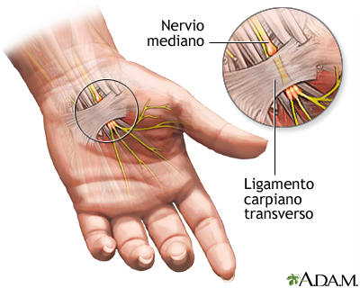

El síndrome del túnel carpiano es una dolencia que se origina por una excesiva presión hacia el nervio mediano (1). El cual, posibilita la sensibilidad y movimientos a partes de la mano. Este síndrome puede provocar debilidad, entumecimiento y hormigueo en la mano y dedos (pulgar, índice, dedo medio y el lado radial del dedo anular) (2).
Las manifestaciones que se presentan pueden ser las siguientes (5):
Procesos que se relacionan con el síndrome del túnel carpiano , como los siguientes(6):
El examen se realiza presionando la superficie palmar de la muñeca ,sobre el nervio mediano, del paciente. La respuesta se considera positiva si desencadena parestesias en los dedos inervados del nervio mediano (7).
Consiste en que el paciente mantenga flexionadas ambas manos unidas por el dorso y con los dedos hacia abajo. Se debe mantener esta posición durante un minuto. La prueba es positiva si conduce a dolor o parestesia en la distribución del nervio mediano (7).
La prueba consiste en analizar el funcionamiento de los nervios que transmiten la sensibilidad y fuerza, como también puede ser el caso de los músculos. El examen se lleva a cabo situando electrodos en zonas específicas del cuerpo, sobre los cuales entrega estímulos de corrientes eléctricas. En casos para sondear músculos se emplea electrodos especiales en forma de aguja fina (8).
Este estudio proporciona información que ayuda a definir la propagación del impulso nervioso en cualquier nervio periférico, como es el caso del nervio mediano. Para la exploración se utilizan electrodos, con los cuales se puede evaluar el tiempo en lo que los impulsos eléctrico viajan (9).